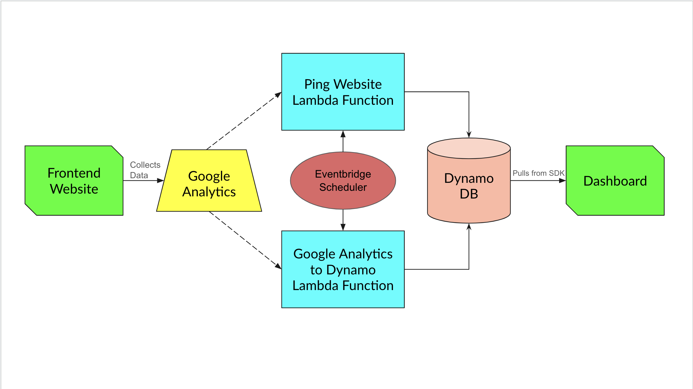

This dashboard collects metrics from this website, providing insights into user behavior, traffic sources, and other key metrics. The process begins when a user interacts with the website. These interactions are collected as data by Google Analytics. To ensure the data is stored and accessible for analysis, two AWS Lambda functions are used. First, the Ping Website Lambda Function, which periodically checks the website to ensure it's online and functioning correctly and sends the results in a JSON to DynamoDB. Second, the Google Analytics to DynamoDB Lambda Function, which pulls the data from Google Analytics and stores it in another DynamoDB table also in JSON format. Both functions are scheduled by an Amazon EventBridge Scheduler to run on a daily basis. When a user accesses the dashboard, the necessary data is retrieved from DynamoDB using AWS SDKs. This data is then visualized on the dashboard using D3.js. This integrated system ensures a seamless and efficient data flow from user interactions to data visualization, allowing for real-time monitoring and analysis of website performance.
